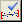
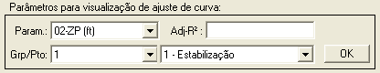
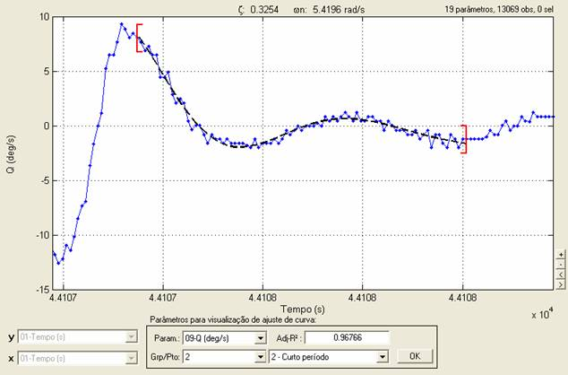
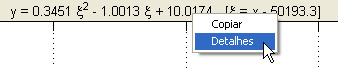

| Menu Ferramentas |
|
Essa função
permite visualizar os
ajustes de curva definidos para os pontos de ensaio cadastrados na ferramenta
de edição de pontos de ensaio.
Depois de
cadastrar os pontos e
definir os ajustes de curva desejados, clique em “Ferramentas
► Gerenciamento de pontos
de ensaio ... ►
Visualização dos ajustes
de curva” ou no botão 
A Caixa de
Diálogo solicitará que o usuário indique os
parâmetros para a visualização:

● A abscissa
será alterada automaticamente para o
tempo de referência e não poderá ser alterada.
● No campo “Param.”, selecione o parâmetro para visualização do ajuste. Os parâmetros que tiverem ajustes de curva cadastrados serão precedidos por um asterisco na lista.
● Nos campos “Grp/Pto”,
indique o grupo e o ponto de ensaio que deseja visualizar.
A abscissa será ajustada automaticamente para mostrar o ponto
selecionado.

Enquanto a
função estiver ativada, não será possível
realizar as operações do R_DAT. Clique no botão “OK” para desativar a
função.
As funções de zoom e movimentação dos gráficos continuam funcionarão
normalmente.
O ponto de
ensaio será delimitado por colchetes vermelhos.
Quando o
parâmetro selecionado tiver ajuste de curva
definido, a curva ajustada será apresentada no gráfico.
Na parte
superior do gráfico, serão apresentadas as
seguintes informações relativas ao ajuste:
- Ajuste polinomial:
equação da curva ajustada. Caso haja correção de origem, a variável
independente x passa a ser ξ = x – x0, onde x0
é o
valor inicial de x no ponto de ensaio.
- Ajuste de 1ª
ordem: valores de τ, y0
e y∞;
- Ajuste de 2ª
ordem: valores de ζ e ωn.
No campo Adj-R² será apresentado o
coeficiente de múltipla determinação ajustado pelos graus de liberdade (R² ajustado). Esse coeficiente
representa uma medida
normalizada da qualidade do ajuste, variando de
Os ajustes de
curva e os coeficientes são obtidos da mesma
forma que na função
de juste de
curva do menu
“Funções”.
Menu da Equação
Ao clicar com o
botão direito do mouse sobre a equação,
surgirá um menu com as
opções “Copiar” e “Detalhes”.

-
Copiar:
Ao clicar nessa opção a equação será copiada como texto para a Área de
Transferência do Windows, de onde pode ser colada em qualquer
aplicativo editor
de texto.
- Detalhes: Ao clicar nessa
opção será
apresentada uma janela com os detalhes do ajuste de curva.
As informações
apresentadas pela opção “Detalhes” são as
mesmas apresentadas na execução da função
de juste de curva
do menu “Funções”.
Para sair da
função, clique no botão “OK”.
| |
Validação
dos pontos de ensaio |
Obtenção de dados dos pontos de ensaio | |